Вот и стукнуло тебе 51. И это письмо — про то, что обычно не говорят вслух. Я собрала здесь всё самое важное. Про тебя.
Сначала — про то, что делает тебя тобой.
Твои суперспособности
Их у тебя намного больше. Вот только те, что мы успели заметить.
01
Одеваешь всю семью на глаз. Посмотришь, прикинешь — и вещь точно в размер, без примерки. Всегда попадание.
02
Появляешься тогда, когда нужен. Как будто чувствуешь на расстоянии — и оказываешься рядом ровно в тот момент, когда без тебя никак.
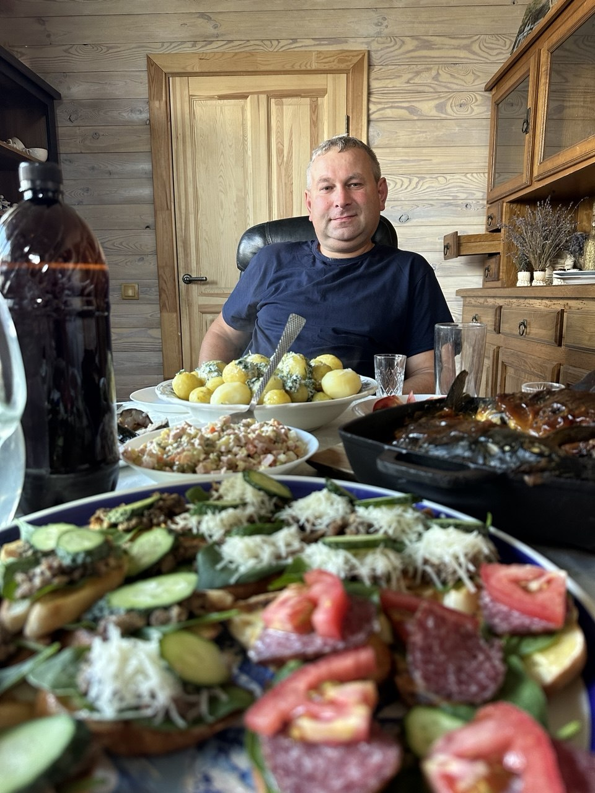
03
Решаешь любой вопрос. Одним звонком, одной поездкой, одним «сейчас разберёмся». И правда разбираешься.
04
Из ничего делаешь праздник. Собрать всех вместе за одним столом, даже очень незнакомых друг другу людей, и сделать праздник — это твоё.
05
Обнимешь — и страшное становится маленьким. Любая проблема рядом с тобой почему-то уменьшается в размерах.
06
Договоришься с кем угодно. Спокойно, по-своему — и всегда по-честному. Этому невозможно научить, только перенять.
07
Спишь по 3 часа — и не сдаёшься. Меняя одну работу на другую, ты умудрялся спать по три часа, только чтобы сделать нашу жизнь лучше.
А ещё у тебя есть тотемные животные.
Твои тотемные животные
🐹 Папа-хомяк
Фраза «всё в дом» — это точно про тебя. Когда под тобой много зёрнышек, ты спокоен. А как только зёрнышки начинают заканчиваться — у тебя включается пропеллер.
🐔 Папа-курица
Никто так не кудахчет над своими цыплятами, как наш папа. И мы тебя очень любим за это.
🐸 Папа-лягушка
У тебя есть феноменальная способность залезть глубоко в *** и героически оттуда вылезти, обретя при этом новую суперсилу. Как та лягушка, что попала в кувшин с молоком и сбила из него масло.
Теперь — про то, что я никогда не забуду.
Наши воспоминания
воспоминание, от которого щемит в сердце
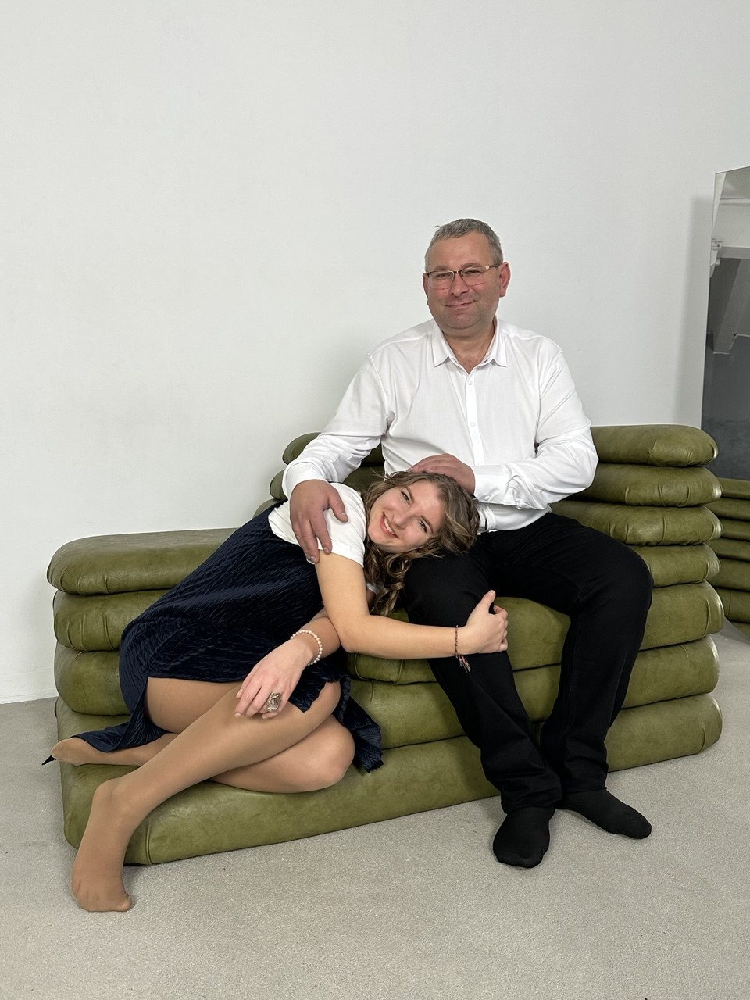
Супер дорогая кукла, подаренная втихаря от мамы
Когда я была маленькой, мы пошли на последние деньги — то ли мне за джинсами, то ли тебе за кроссовками. Ты тогда себе так ничего и не купил и ходил в рваных кроссовках. Зато втихаря от мамы принёс мне огромную красивую куклу — она умела разговаривать и даже «есть».
Я до сих пор вспоминаю эту куклу со слезами счастья на глазах — за то, что у меня такой чудесный папа.
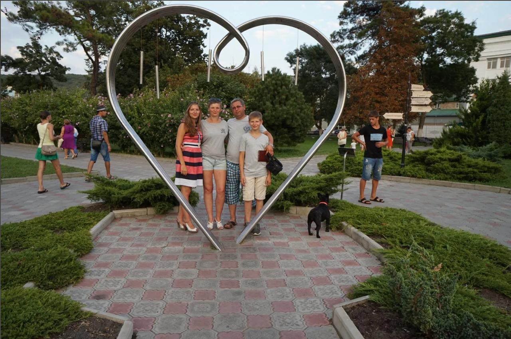
детство
Наши поездки на море с палатками
Помнишь, как возил нас всей семьёй в Абрау-Дюрсо? Спасибо тебе за эти волшебные воспоминания! Виноградники, гора Эльбрус, целебные грязи…
Всё это мы помним и очень благодарим тебя за такое прекрасное детство.
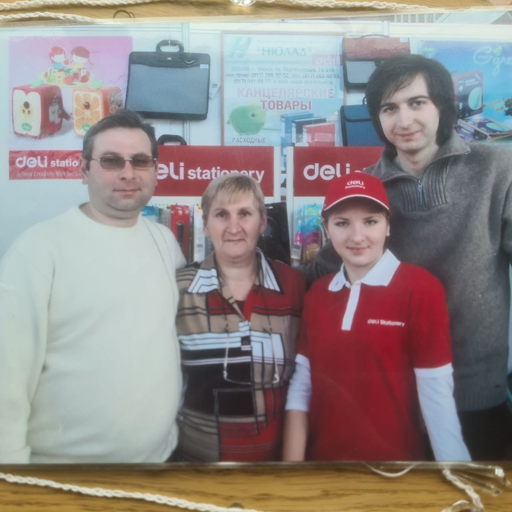
школа жизни
Выставка «Здравствуй, школа!»
А помнишь, как мы продавали канцтовары на выставке «Здравствуй, школа!»? Я до сих пор помню все преимущества циркуля, лишь бы его продать. Я слушала, как ты продаёшь, и повторяла за тобой — и у меня начало получаться.
Именно тогда я научилась продавать. Теперь я продам что угодно и кому угодно.
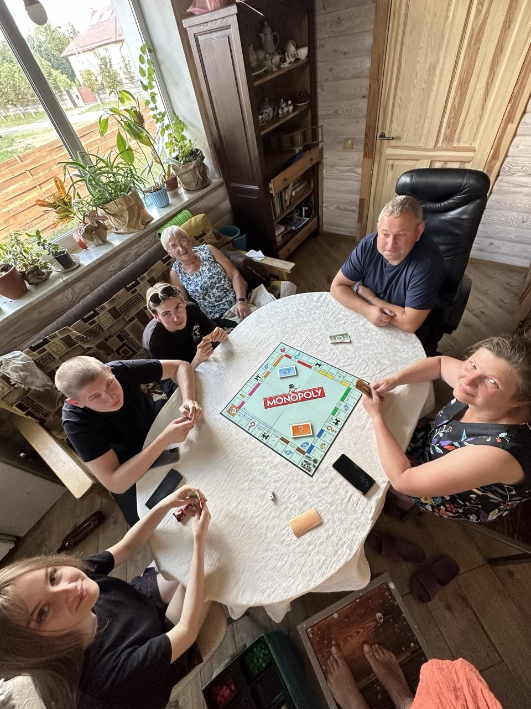
первые деньги
Мои первые деньги
Моя первая работа и мои первые деньги — у тебя на складе, на бывшем таксопарке. Ты научил меня, что деньги не сваливаются с неба. Но нет ничего невозможного. Потом я уже сама находила возможность зарабатывать и продавала канцтовары одноклассникам.
До сих пор помню, как передавала тебе список заказов, ты ездил за товаром в оптовые компании и привозил мне то, что я напродавала. Всё было по-серьёзному — и так важно для той маленькой бизнес-вумен, которая теперь уже стала большой.
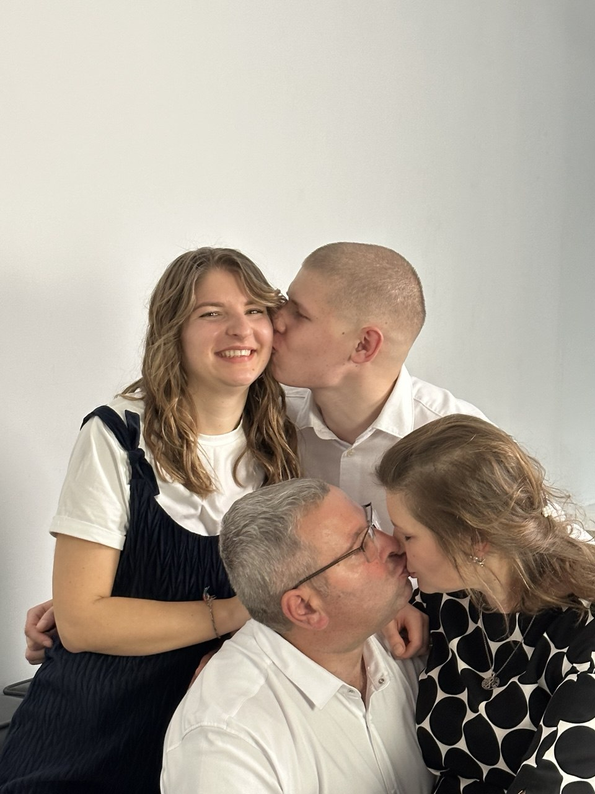
доверие
Как вы уехали в Египет и оставили бизнес на меня
Помнишь, как вы с мамой уехали вдвоём в Египет и оставили бизнес на меня? Уж не знаю, было ли это по-настоящему. Но для меня это были целых две недели, где я руководила: оплачивала счета, договаривалась с людьми, общалась с клиентами и сотрудниками.
Не понарошку. Кажется, тогда я впервые почувствовала, что могу. А сейчас рассказываю этот опыт с тёплой улыбкой в бизнес-клубе, среди предпринимателей, — как интересный факт о своей жизни.
И вот за что я тебе благодарна.
Спасибо тебе
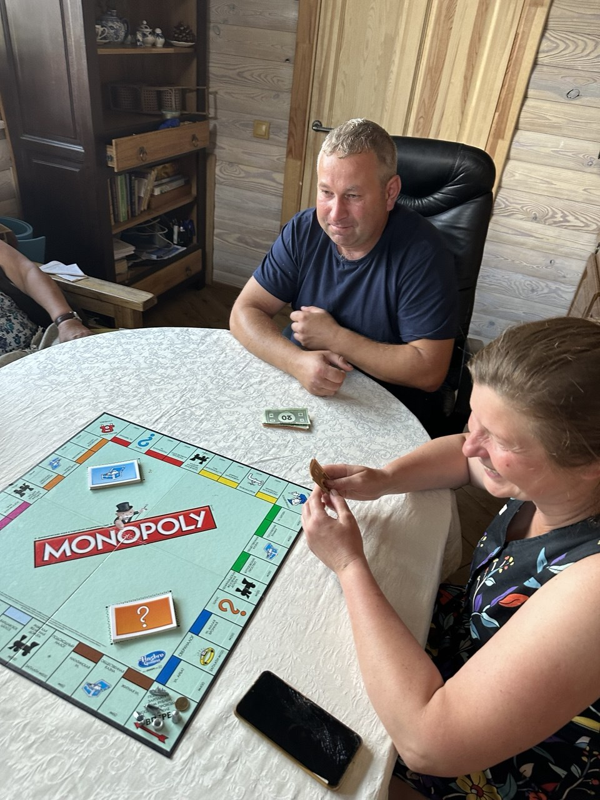
За фундамент всего, чем я живу
Ты заложил основу всего, чем я сейчас занимаюсь. Я научилась мыслить предпринимательски, везде искать возможности и «мыслить деньгами». Благодаря тебе я ни дня не проработала в найме — я просто сразу знала, что могу иначе.
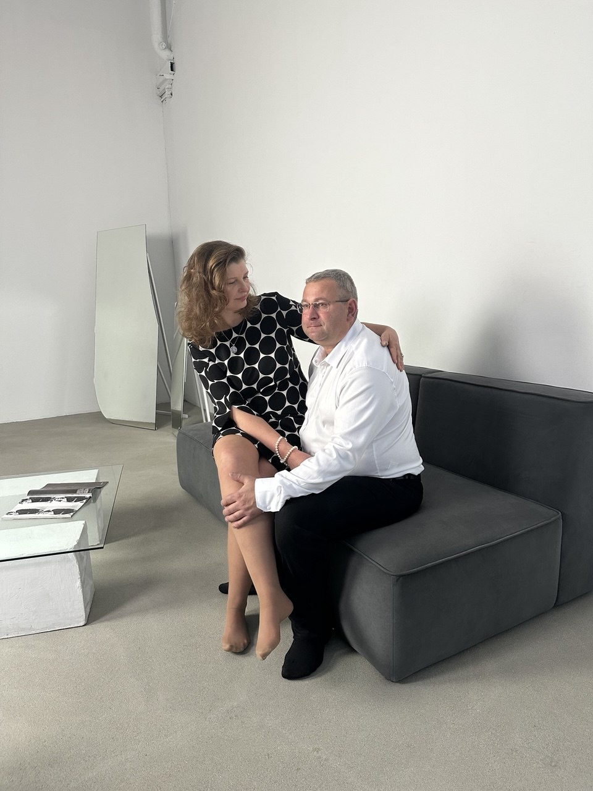
За семью, которую ты не рассказывал, а показывал
Вы с мамой вместе уже 30 лет, у меня полная семья — и это определило всё моё отношение к браку, к детям, к жизни. Эти ценности ты вложил в меня внутривенно. Просто тем, как ты живёшь.
А любим мы тебя вот за что.
✦за то, что ты научил нас не бояться жизни.
✦за то, что ты показал, какой должна быть семья.
✦за то, что в самые критичные моменты мы всегда звоним тебе.
✦за то, как много ты работал и уставал, чтобы мы жили хорошо.
✦за то, что построил для нас такой большой дом.
✦за то, как научил нас справляться с трудностями жизни.
✦за то, что оберегал нас в те моменты, даже когда мы были с этим не согласны.
✦просто потому что ты — наш папуля.
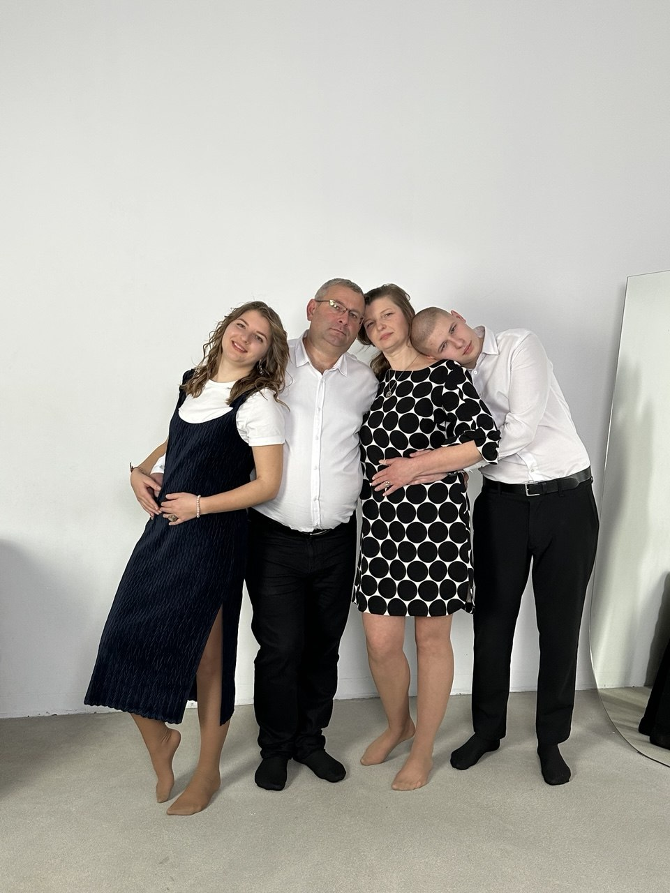
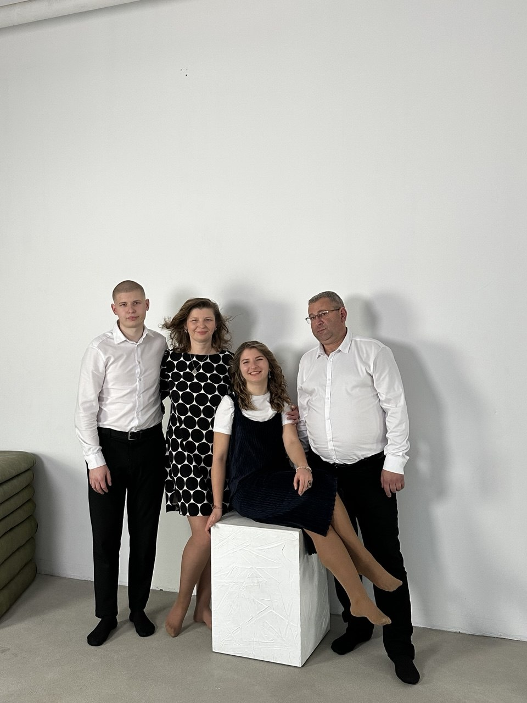
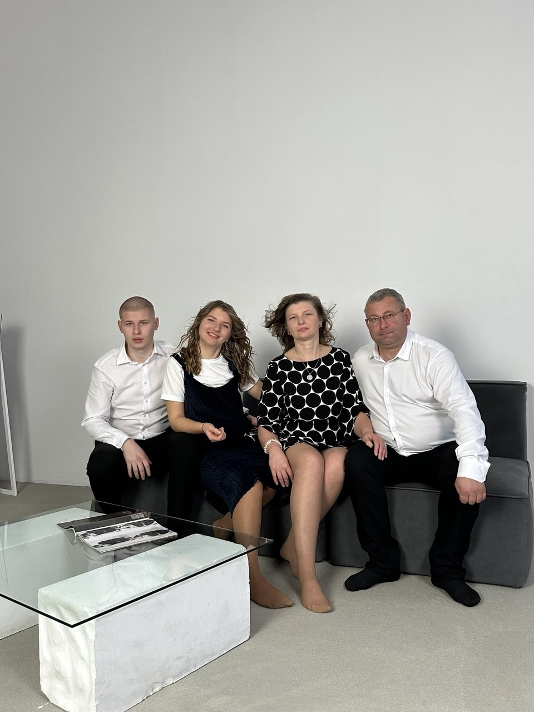
с днём рождения
С 51-м, папуля
Спасибо, что ты у нас есть. Пусть этот год будет к тебе таким же добрым, каким ты всегда был к нам.
51
нажми, чтобы задуть свечи
Загадали за тебя только одно — чтобы ты был счастлив и здоров ещё очень-очень долго.
Твоя любимая семья — Наташа, Юля и Владикс любовью ♥